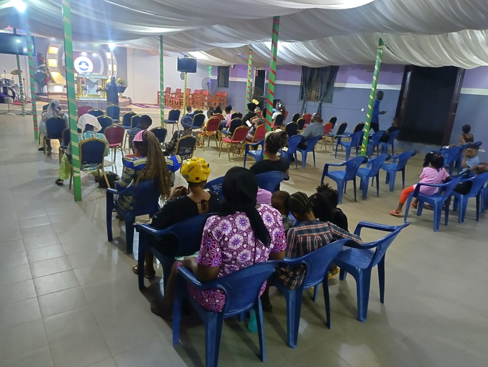
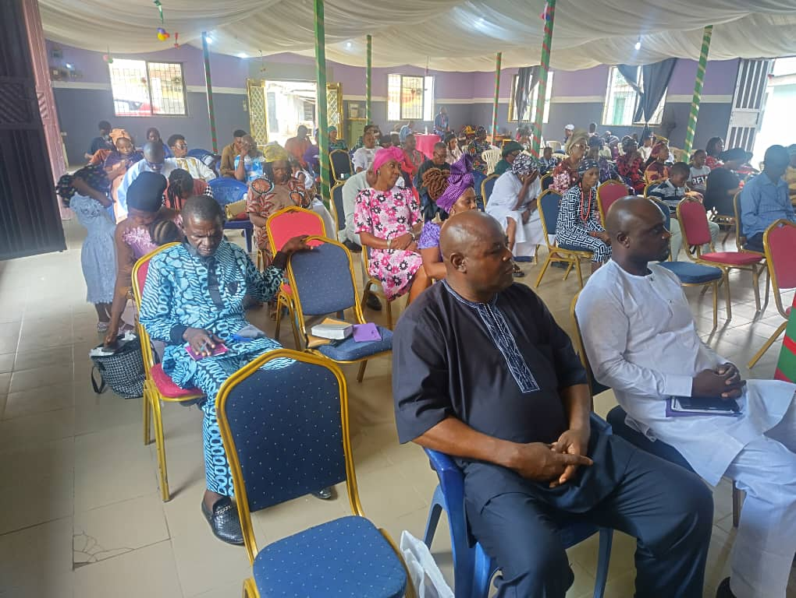
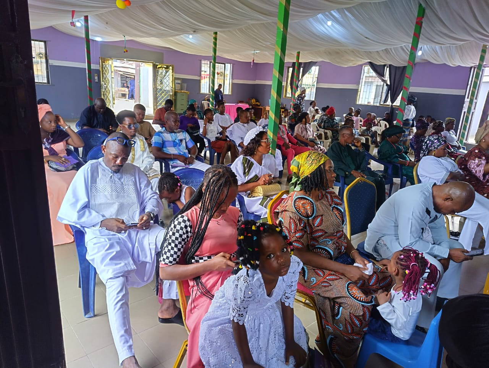
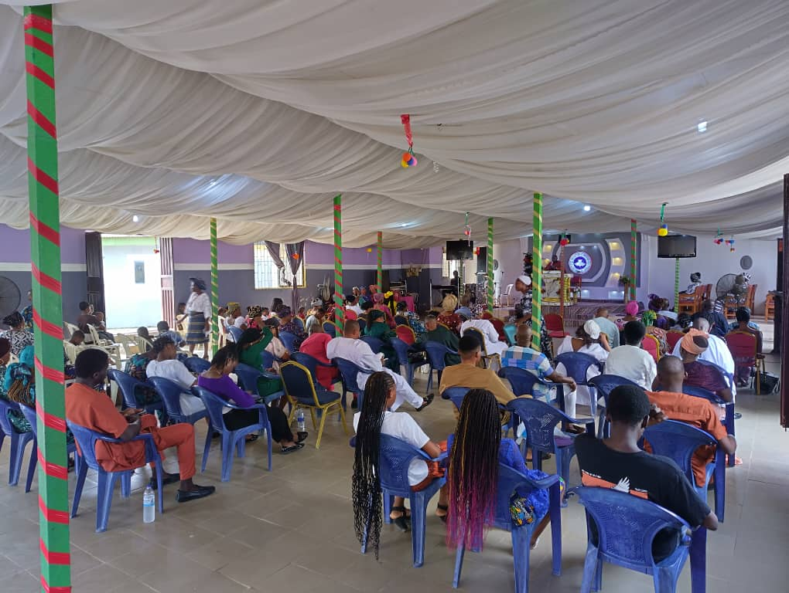
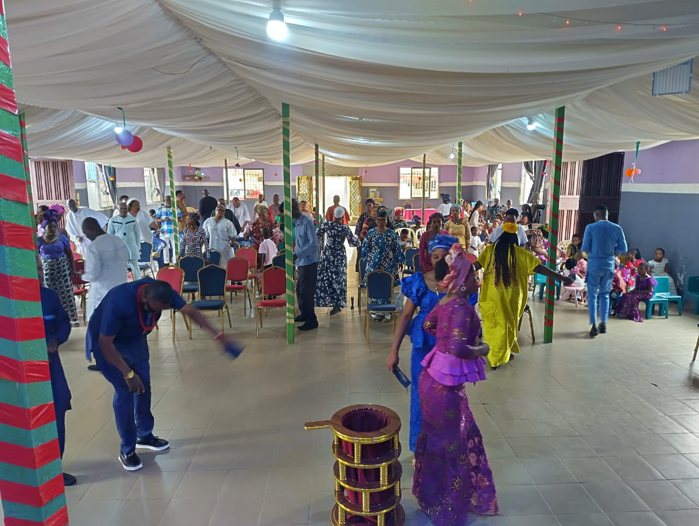

About RCCG Solomon's Porch
Learn our story, vision, and mission
Our History
RCCG Solomon's Porch Community Church was founded sometime in 2000 with a simple yet profound vision: to create a gathering place where people from all walks of life could come together to experience faith, community, and purpose.
Named after the biblical gathering place where people came to learn, share, and support one another, our church has grown from a small congregation of 30 members to a vibrant community of well over 200 families. Throughout our journey, we have remained committed to our core values of inclusivity, compassion, and spiritual growth.
Over the past 20+ years, we have witnessed countless transformations in the lives of our members, launched community outreach initiatives, and built meaningful partnerships with local organizations. Today, Solomon's Porch stands as a beacon of hope and a testament to the power of faith and community.
More Excerpts
from our services
{kind=link}

A shot taken during one of our weekly services
{kind=link}

Front Left View of the Church
{kind=link}
Tip: Replace the sample images in the images/ folder and update src attributes as needed.
Our Vision
To be a thriving, inclusive faith community that transforms lives, strengthens families, and serves as a beacon of hope in our city. We envision a world where every person knows they are valued, loved, and called to their unique purpose.
Our Mission
To worship God authentically, grow spiritually, care for one another deeply, and serve our community generously. We are committed to making the teachings of Christ accessible, relevant, and transformative in our daily lives.
Our Core Values
- Faith: Trusting in God's purpose and guidance
- Community: Supporting one another in love
- Integrity: Acting with honesty and accountability
- Service: Serving others with compassion
- Growth: Continually learning and evolving
Our Leadership
Pastor Adebanjo
Area Pastor
With over 10 years of ministry experience, Pst Adebanjo leads our congregation with vision and compassion. He is passionate about biblical teaching and community transformation.
Pastor (Mrs) Adebanjo
Area Mummy
Pastor (Mrs) Adebanjo specializes in spiritual formation and discipleship. She is especially passionate about the children ministry that she occasionally assists the children teacher whenever she can
Pastor Arogundade
Parish Coordiinator
Pastor Arogundade coordinates our community service initiatives and partnerships.
Mrs Bola Arogundade
Assistant Parish Coordiinator
Mrs Bola Arogundade functions as the women leader of the church and also assists the Area Mummy in the childrens department.
More Clips
from our Sunday

Front Left View

Rear Right View

A shot from one of our
Thanksgiving services
Tip: Replace the sample images in the images/ folder and update src attributes as needed.
Want to support our mission as a church?
Whether you want to support in kind by giving, in time by serving, or in prayers...
Contact Us using this link